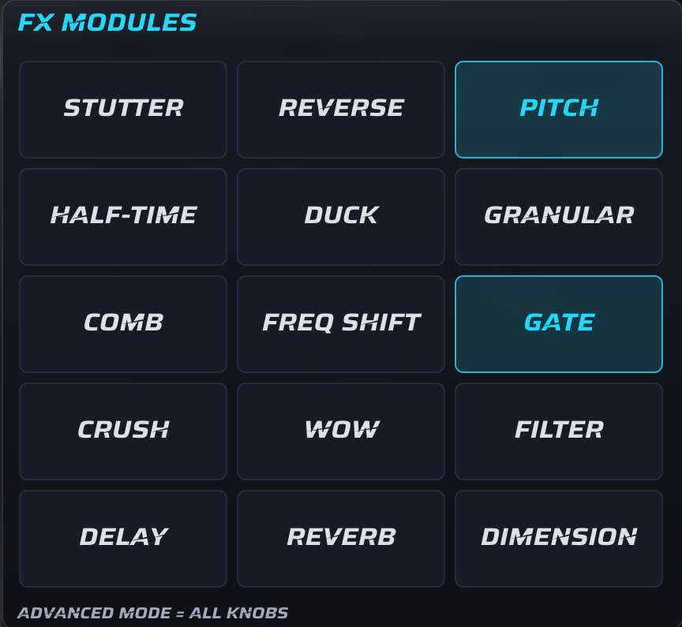

FX modules
Fifteen modules in three worlds
Light a module to put it in the chain. Rhythm modules cut and flip the sound in time, Texture modules change its grain and colour, Space modules put it in a room. Modules fade in and out instead of switching hard.
- Rhythm: Stutter, Reverse, Pitch, Half-Time, Duck
- Texture: Granular, Comb, Freq Shift, Gate, Crush
- Space: Wow, Filter, Delay, Reverb, Dimension